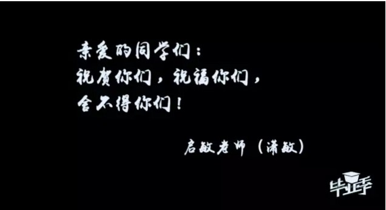
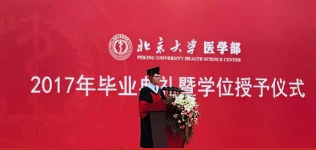
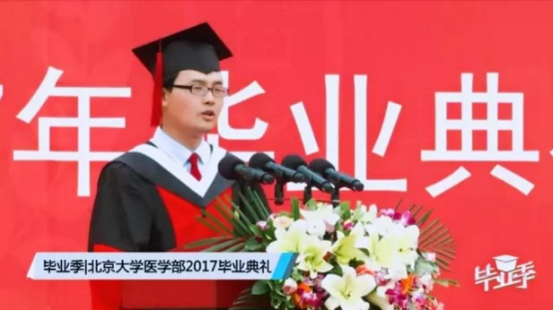
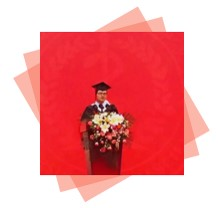
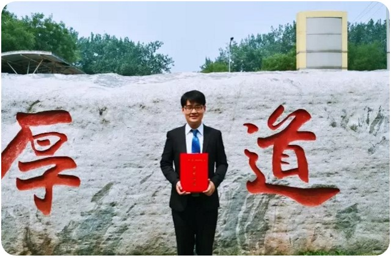
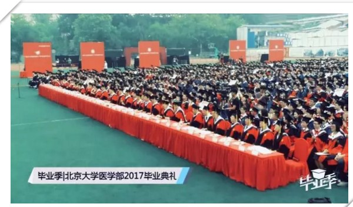
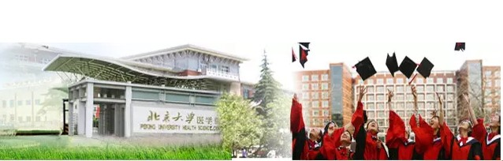

今天上午，在风雨操场举办了医学部毕业典礼，作为研究生优秀代表的司龙龙同学，结合自身的切身经历，在广大师生面前进行了一场感人至深、声情并茂的发言。我们特在此将发言稿与大家共享——
怀感恩之心，持敬畏之志
药学院2012级直博生司龙龙

尊敬的各位领导、老师，亲爱的同学们：
大家上午好，我是药学院的博士生司龙龙。今天，能够站在这里，作为毕业生代表发言，是我从来没有想到过的荣誉。

5年前，初到北医，我的内心是忐忑不安的，我觉得这里是学霸、天才的聚集地，而我则是机缘巧合混入其中的普通人。5年前，站在希波克拉底的雕像前，我的内心是小心翼翼的，因为我不知道自己要具备什么才能配得上“健康所系，性命相托”的誓言。

进入北医，我才发现真正的精英并不是天才，而是付出更多努力的人。与很多学科相比，医学生学得辛苦，我们似乎有做不完的实验、读不完的文献、出不完的门诊、查不完的病房，还有那些“步步惊心”的组会。然而，感谢北医，让我们找到自己。在凌晨灯火通明的实验室里，有那个勤奋踏实的你；在解除病痛后的患者眼睛里，有那个认真负责的你；在医患关系紧张的现实社会里，有那个厚道担当的你。在我看来，北医给予我们的最大财富，不是那些权威的理论、枯燥的课本知识，而是自强、自立、自信的人格和通过医药创新改善人类健康的坚定信念。

北医校园不大，如果你视力好，站在南门就可以看到北门外川流不息的车辆。然而这儿却承载着我们太多青春、梦想和回忆。在这里，我从一看文献就蒙圈、一做实验就手忙脚乱的“科研小白”，成长为喜欢挑战科研难题的的大师兄；从连续两次评国奖都被拒之门外的“科研狗”，成长为北医首个“全国大学生年度人物”；从那个怀疑人生的小男孩，成长为一个敢想敢做勇于追梦的有志青年。更奇妙的是，居然还会有姑娘看上我，让我在北医收获了爱情。显然，在过去的几年间，我们每个人都以北医为背景，自导自演了我们各自的奋斗史、爱情史。

此刻，我们为毕业欢呼。但毕业不是结束，而是新的起点；毕业不是代表我们多么优秀，而是说明我们刚刚上路。
怀感恩之心，持敬畏之志。请允许我代表全体毕业生向陪我们一路走来的全体老师、同学、工作人员、父母、亲朋好友致以最崇高的敬意和无尽的感激！同学们，让我们勿忘初心，用“医学梦”托起“中国梦”，秉承北医人的厚道与担当，追求人生路上的诗和远方。

（编辑：香雪海）